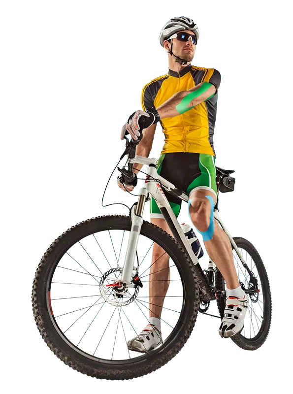

Não corra riscos com a segurança da sua bicicleta. Proteja seu patrimônio com nosso seguro completo para bicicletas.
Faça agora mesmo seu cadastro clicando no botão abaixo.
Cadastre-se

Nosso Projeto
Faremos um scanner que analisa a bicicleta, principalmente na parte das peças (quadro), para verificar o estado e identificar o modelo da bicicleta. Junto com isso uma opção para adicionar o número de série, também utilizar um banco de dados para auxiliar a IA nesse processo de reconhecimento e ensinando a mesma com o machine learning.
Em nosso projeto terá uma página principal, que será como no modelo acima onde o cliente será redirecionado para as seguintes páginas:
Página para o cliente executar seu cadastro. Página para o cliente entrar em sua conta. Página para o cliente acessar o scanner. Página com os integrantes da equipe.